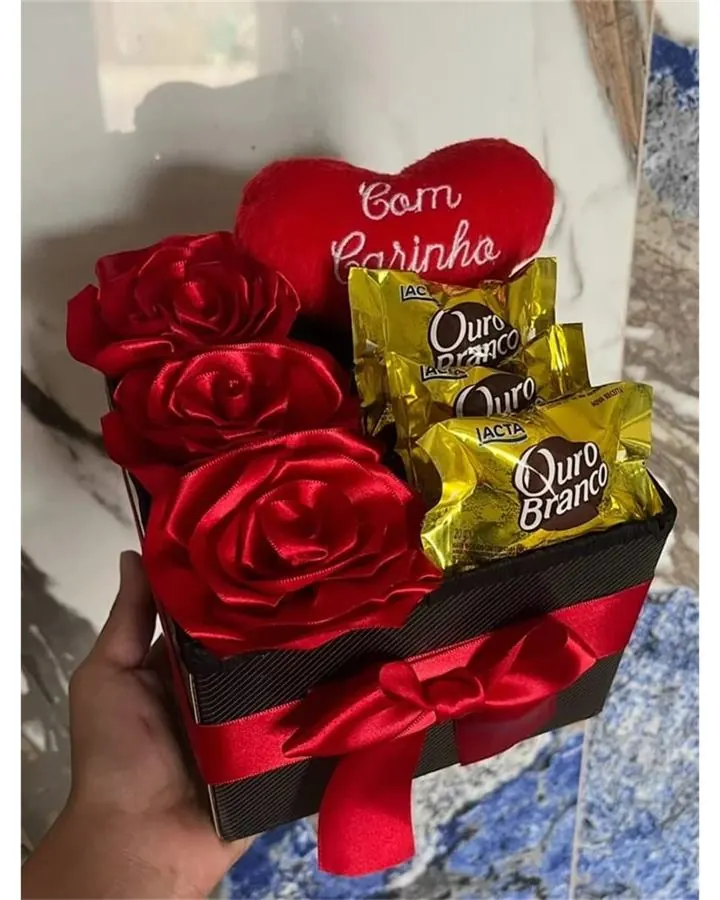

Presente para esposa
Lembre de algo que ela comentou recentemente: um sabor, uma cor ou um momento que gostaria de viver. Os presentes românticos podem ser um ponto de partida; o gosto dela vem primeiro.
Um pouco de atenção, muito significado
Não precisa ter a ideia pronta. Comece por quem vai receber, conte o que deseja transmitir e encontre um caminho para escolher com carinho.
Canaã dos Carajás · PA
Presentes por encomenda e retirada agendada. Consulte disponibilidade para entrega.

Lembre de algo que ela comentou recentemente: um sabor, uma cor ou um momento que gostaria de viver. Os presentes românticos podem ser um ponto de partida; o gosto dela vem primeiro.
Observe os hábitos e preferências dele. Chocolates, itens personalizados e uma composição de cesta de presente podem fazer sentido quando escolhidos com esse cuidado.
Escolha algo que converse com a pessoa que ela é, além do papel de mãe. Se ela aprecia flores, explore os buquês e pergunte sobre cores e composição.
Uma referência à amizade costuma ajudar: um sabor preferido, uma brincadeira carinhosa ou uma memória compartilhada. Consulte a Zadoni sobre chocolates, kits e itens personalizados.
Para namorada, consulte o guia já existente de presentes para namorada. Ele reúne referências nacionais e links de lojas parceiras; para uma encomenda local, fale com a Zadoni.
Pense no novo ciclo e na personalidade da pessoa. Veja as cestas de aniversário e acrescente uma mensagem que celebre algo especial nela.
Prefira um gesto compatível com a relação. Uma lembrança simples pode ser significativa quando parte de algo que vocês compartilham.
O presente acompanha uma conversa, mas não substitui responsabilidade nem obriga a pessoa a perdoar. Escolha uma mensagem respeitosa e dê espaço para ela responder.
Considere se o presente será individual ou compartilhado. A página de presentes de Natal em Canaã dos Carajás reúne ideias para planejar a encomenda.
Flores podem combinar com quem aprecia um gesto visual; chocolates, com quem tem um sabor preferido; café da manhã, com quem valoriza um ritual tranquilo. Para personalizar, conte uma referência real da pessoa. Confirme restrições alimentares ou sensibilidades antes de escolher.
Defina uma faixa confortável para você e informe se ela precisa incluir eventuais custos de entrega ou personalização. Consulte disponibilidade para entrega. A faixa do formulário orienta a conversa e não representa preço de produto.
Compare as opções no catálogo de presentes em Canaã e escolha uma frase em mensagens para cartão.
Conte um pouco sobre quem vai receber. Ao final, confira o resumo e envie para a Zadoni pelo WhatsApp. As respostas ficam nesta página até você decidir enviá-las.
A Zadoni vai sugerir opções pelo WhatsApp depois de receber seu resumo. Você também pode pedir orientação agora sem responder às perguntas.
O envio é uma consulta. Composição, valor, data e disponibilidade serão confirmados no atendimento.
Selecione “Quero ajuda da Zadoni” no estilo e conte sobre a pessoa e a ocasião. O resumo ajuda o atendimento a sugerir opções.
Não. É uma preferência para orientar a conversa. A Zadoni confirma quais composições são possíveis e o valor final, incluindo eventuais custos adicionais.
Não. Ele prepara uma mensagem para você revisar e enviar pelo WhatsApp. A encomenda depende da confirmação no atendimento.